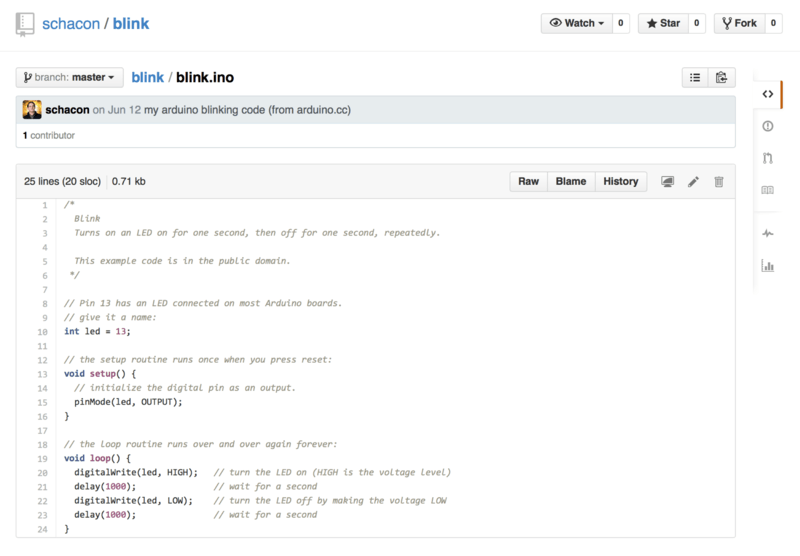
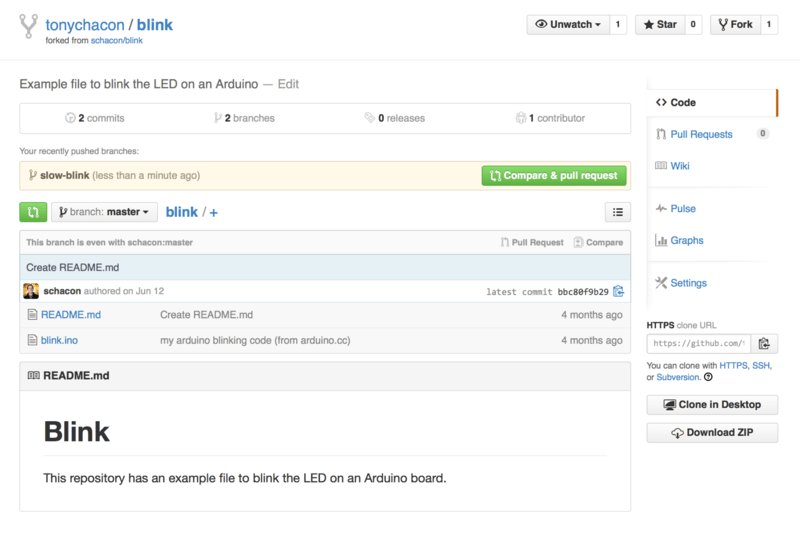
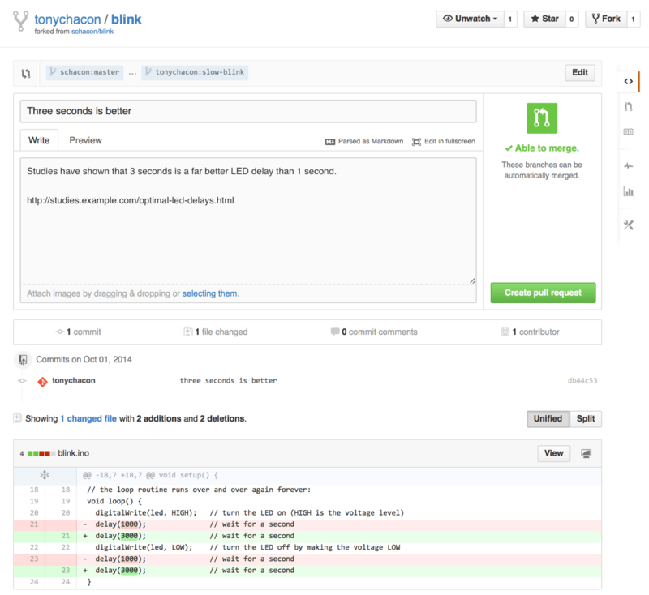

6.2 GitHub - Внесение собственного вклада в проекты
Внесение собственного вклада в проекты
Теперь наша учётная запись создана и настроена, давайте же пройдёмся по деталям, которые будут полезны при внесении вклада в уже существующие проекты.
Если вы хотите вносить свой вклад в уже существующие проекты, в которых у нас нет прав на внесения изменений путём отправки (push) изменений, вы можете создать своё собственное ответвление (“fork”) проекта. Это означает, что GitHub создаст вашу собственную копию проекта, данная копия будет находиться в вашем пространстве имён и вы сможете легко делать изменения путём отправки (push) изменений.
|
Примечание |
Исторически так сложилось, что англоязычный термин “fork” (создание ветвления проекта) имел негативный контекстный смысл, данный термин означал, что кто-то повёл или ведёт проект с открытым исходным кодом в другом, отличном от оригинала, направлении, иногда данный термин так же означал создание конкурирующего проекта с раздельными авторами. В контексте GitHub, “fork” (создание ветвления проекта) просто означает создание ветвления проекта в собственном пространстве имён, что позволяет вносить публичные изменения и делать свой собственный вклад в более открытом виде. |
Таким образом, проекты не обеспокоены тем, чтобы пользователи, которые хотели бы выступать в роли соавторов, имели право на внесение изменений путём их отправки (push). Люди просто могут создавать свои собственные ветвления (fork), вносить туда изменения, а затем отправлять свои внесённые изменения в оригинальный репозиторий проекта путём создания запроса на принятие изменений (Pull Request), сами же запросы на принятие изменений (Pull Request) будут описаны далее. Запрос на принятие изменений (Pull Request) откроет новую ветвь с обсуждением отправляемого кода, и автор оригинального проекта, а так же другие его участники, могут принимать участие в обсуждении предлагаемых изменений до тех пор, пока автор проекта не будет ими доволен, после чего автор проекта может добавить предлагаемые изменения в проект.
Для того, чтобы создать ответвление проекта (fork), зайдите на страницу проекта и нажмите кнопку “Создать ответвление” (“Fork”), которая расположена в правом верхнем углу.
Рисунок 89. Кнопка “Создать ответвление” (“Fork”)
Через несколько секунд вы будете перенаправлены на собственную новую проектную страницу, содержащую вашу копию, в которой у вас есть права на запись.
Рабочий процесс с использованием GitHub
GitHub разработан с прицелом на определённый рабочий процесс с использованием запросов на слияния. Этот рабочий процесс хорошо подходит всем: и маленьким, сплочённым вокруг одного репозитория, командам; и крупным распределённым компаниям, и группам незнакомцев, сотрудничающих над проектом с сотней копий. Рабочий процесс GitHub основан на Тематические ветки, о которых мы говорили в [ch03-git-branching].
Вот как это обычно работает:
Очень напоминает подход, описанный в главе Рабочий процесс с менеджером по интеграции, но вместо использования электронной почты, команда сотрудничает через веб-интерфейс.
Давайте посмотрим, как можно предложить изменения в проект, размещённый на GitHub.
Тони ищет, чего бы запустить на своём новеньком Arduino. Кажется, он нашёл классный пример на https://github.com/schacon/blink.

Рисунок 90. Проект, над которым мы хотим поработать
Единственная проблема в том, что светодиод моргает слишком быстро; нам кажется, лучше установить задержку в три секунды, не одну. Так давайте исправим это и предложим изменения автору.
Для начала, нажмите кнопку "Fork", как было сказано выше, чтобы заполучить собственную копию проекта. Мы зарегистрированы на GitHub под именем "tonychacon", так что наша копия окажется по адресу https://github.com/tonychacon/blink, где мы сможем редактировать её. Мы клонируем его, создадим тематическую ветку, внесём необходимые изменения и, наконец, отправим их на GitHub.
$ git clone https://github.com/tonychacon/blink (1)
Cloning into 'blink'...
$ cd blink
$ git checkout -b slow-blink (2)
Switched to a new branch 'slow-blink'
$ sed -i '' 's/1000/3000/' blink.ino (3)
$ git diff --word-diff (4)
diff --git a/blink.ino b/blink.ino
index 15b9911..a6cc5a5 100644
--- a/blink.ino
+++ b/blink.ino
@@ -18,7 +18,7 @@ void setup() {
// the loop routine runs over and over again forever:
void loop() {
digitalWrite(led, HIGH); // turn the LED on (HIGH is the voltage level)
[-delay(1000);-]{+delay(3000);+} // wait for a second
digitalWrite(led, LOW); // turn the LED off by making the voltage LOW
[-delay(1000);-]{+delay(3000);+} // wait for a second
}
$ git commit -a -m 'three seconds is better' (5)
[slow-blink 5ca509d] three seconds is better
1 file changed, 2 insertions(+), 2 deletions(-)
$ git push origin slow-blink (6)
Username for 'https://github.com': tonychacon
Password for 'https://tonychacon@github.com':
Counting objects: 5, done.
Delta compression using up to 8 threads.
Compressing objects: 100% (3/3), done.
Writing objects: 100% (3/3), 340 bytes | 0 bytes/s, done.
Total 3 (delta 1), reused 0 (delta 0)
To https://github.com/tonychacon/blink
* [new branch] slow-blink -> slow-blink
Теперь, если мы зайдём на страничку нашей копии на GitHub, мы увидим, что GitHub заметил наши изменения и предлагает открыть запрос на слияние с помощью большой зелёной кнопки.
Также можно зайти на страницу "Branches", по адресу https://github.com/<user>/<project>/branches, найти интересующую ветку и открыть запрос оттуда.

Рисунок 91. Кнопка открытия запроса на слияние
Если нажать на эту кнопку, появится экран ввода заголовка и описания предлагаемых изменений на рассмотрение владельцу проекта. Рекомендуется серьёзно подойти к составлению описания и сделать его максимально информативным, чтобы владелец проекта понимал, зачем эти изменения и какую пользу они принесут.
Также мы видим список коммитов в нашей тематической ветке, "опередивших" ветку master (в данном случае всего один коммит) и предпросмотр всех изменений, вносимых этими коммитами.

Рисунок 92. Страница создания запроса на слияние
После создания запроса на слияние (путём нажатия кнопки "Create pull request" на этой странице) владелец форкнутого проекта получит уведомление о предложенных изменениях со ссылкой на страницу с информацией о запросе.
|
Примечание |
Запросы на слияние широко используются для публичных проектов типа описанного выше, когда контрибьютор уже подготовил все изменения для слияния с основным репозиторием. Тем не менее, часто можно встретить использование запросов на слияние во внутренних проектах в самом начале цикла разработки. Обьяснение простое: вы можете обновлять тематическую ветку после открытия запроса на слияние, поэтому сам запрос открывается как можно раньше чтобы отслеживать прогресс разработки. |
На этом этапе, владелец проекта может просмотреть предложенные изменения, принять, отклонить или прокомментировать их. Предположим, ему импонирует идея, но он предпочёл бы большую задержку перед включением или выключением света.
В то время как в [ch05-distributed-git] обсуждение изменений может производится через электронную почту, на GitHub всё происходит онлайн. Владелец проекта может просмотреть суммарные изменения, вносимые запросом, и прокомментировать любую отдельно взятую строку.